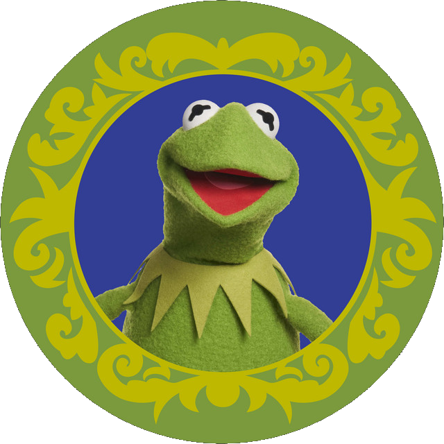

Combine other Kermits to reach the almighty KerMIT!

How to play: Use your
arrow keys to move the tiles. When two tiles
with the same Kermit touch, they
merge into one!
Note:
The order of Kermits is not intended to be a ranking (boo), but
a rough representation of his stages of grief.
OPTIONS:
Created by RecursiveVisions. Forked from GetMIT by Mitchell Gu. Inspired by Get Caltech by Naveen Arun. Based on 2048 by Gabriele Cirulli. and 1024 by Veewo Studio and conceptually similar to Threes by Asher Vollmer.
Background Image: Kermit the Frog's Spotify profile picture